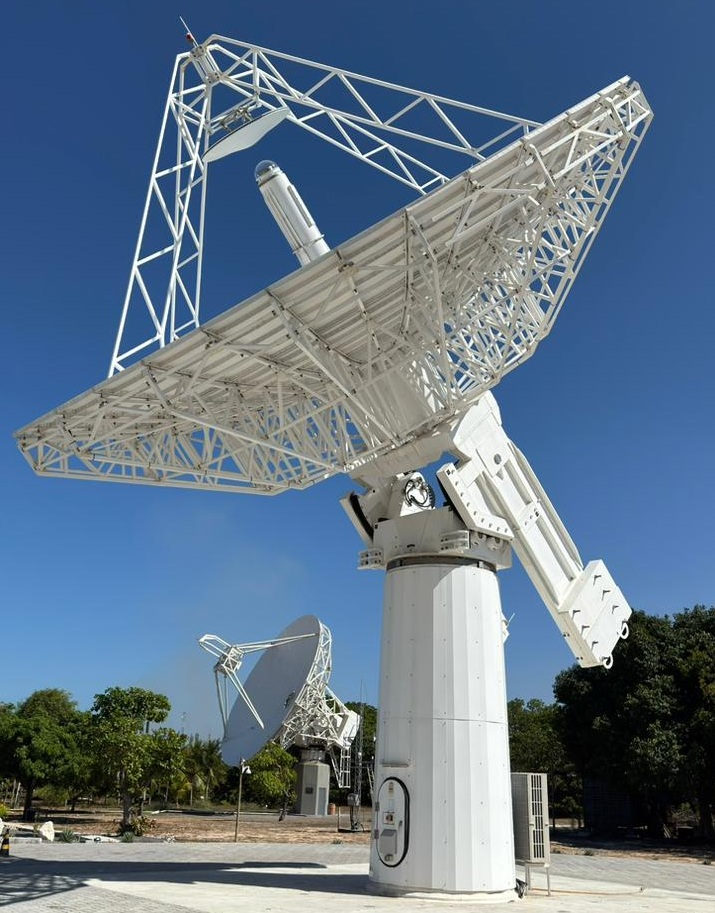

reader@renato:~$ whoami
Renato Abreu.
Engenheiro Eletricista com 14+ anos em infraestrutura crítica (rede global IVS-NASA). Desenvolvo automação em Python no trabalho e estou em transição ativa para desenvolvimento de software e análise de dados.
Sobre mim

Engenheiro Eletricista (UNINTER, 2022) e Técnico em Eletrotécnica (CEPEP, 2011), com mais de 14 anos de experiência em infraestrutura crítica no Rádio Observatório Espacial do Nordeste (Mackenzie/NASA, rede IVS).
Nessa jornada eu evoluí da engenharia física para a lógica de programação: no trabalho diário uso Python para automação de fluxos de dados, consumo de APIs e telemetria — sempre com o rigor de quem responde pela confiabilidade de um sistema científico operando 24/7.
Estou em transição para o ecossistema de dados e desenvolvimento web. Tenho SQL, Power BI, Pandas e JavaScript em aprendizado ativo (Google Data Analytics e Power BI Data Analyst em andamento), traduzindo os indicadores da indústria (MTTR, SLA, OEE) para o ciclo de vida de software e análise de dados.
Experiência
>2012 · presente
Mackenzie — Rádio Observatório Espacial do NE
Técnico de Operações e Manutenção · rede global IVS-NASA
Confiabilidade de sistemas de radioastronomia mantendo 99.7% de disponibilidade operacional. Implementação de dashboards de SLA com redução de 35% no MTTR, automação em Python para telemetria e coleta de dados VLBI, e geração de relatórios técnicos em inglês para a NASA.
>2022
Bacharelado em Engenharia Elétrica e Eletrônica
UNINTER
Graduação concluída — base de projeto, sistemas de potência e gestão que sustentam a transição para dados e desenvolvimento de software.
>2011 · 2012
Haco Etiquetas do Nordeste
Técnico Eletrotécnico
Manutenção preventiva e corretiva em maquinário têxtil de alta performance e automação industrial, reduzindo o downtime em 20%.
Habilidades
Dominado (uso no dia a dia) · Em aprendizado (em curso / praticando)
Desenvolvimento (dominado)
- Python — scripts e automação em produção
- Consumo e integração de APIs REST (JSON)
- Git / GitHub e versionamento
- Linux e linha de comando
- HTML5 / CSS3 — páginas e dashboards
Engenharia & Confiabilidade
- Gestão de Ativos
- Manutenção Preditiva (PCM) e Planejada (PCP)
- Confiabilidade e análise de falhas
- KPIs, SLAs e OEE
- Liderança de equipes multidisciplinares
Infraestrutura & IoT
- Sistemas supervisórios (SCADA)
- Telemetria e monitoramento remoto
- IoT e automação industrial 4.0
- Redes e cabeamento estruturado
- Motores de alta precisão
Em aprendizado
- SQL e modelagem de dados
- Power BI — dashboards e DAX
- Pandas e análise de dados
- JavaScript / front-end
- Streamlit e FastAPI
- Google Data Analytics (em curso)
- Microsoft Power BI Data Analyst (em curso)
Projetos
Ferramenta desktop para download de vídeos do X/Twitter em MP4, com interface gráfica moderna e seleção de pasta de destino.
github.com/renatoapdl/BAIXADOR-XAplicação desktop com clima em tempo real via API REST, atualização automática a cada 5 minutos e manipulação de dados JSON.
github.com/renatoapdl/clima-eusebioAutomação de atualização de dados de discos VLBI em Fortaleza, integrada aos sistemas de radioastronomia do Mackenzie.
github.com/renatoapdl/fgo-data-updateOnde eu trabalho

Rádio Observatório Espacial do Nordeste
Mackenzie · rede global IVS-NASA
Sou responsável pela confiabilidade e disponibilidade operacional de sistemas de radioastronomia vinculados à rede global IVS-NASA — de motores de alta precisão a telemetria, sempre com foco em manter o observatório operando com o padrão de qualidade exigido pela NASA.
Contato
- GitHub github.com/renatoapdl
-
 LinkedIn
/in/renatoabreuengenharia
LinkedIn
/in/renatoabreuengenharia
-
 YouTube
canal YouTube
YouTube
canal YouTube
-
 Instagram
@renato.apdl
Instagram
@renato.apdl
E-mail: renato.apdl@protonmail.com · 📞 (85) 98677-9537 · 📍 Eusébio, CE